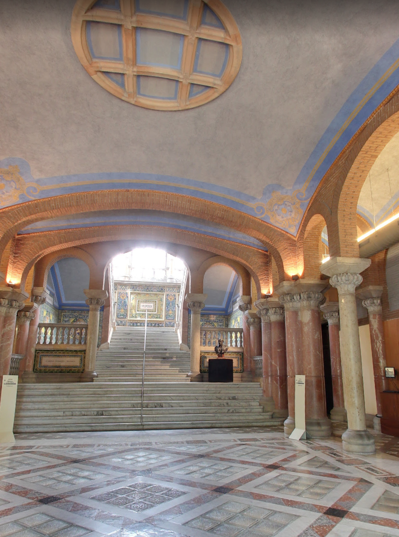
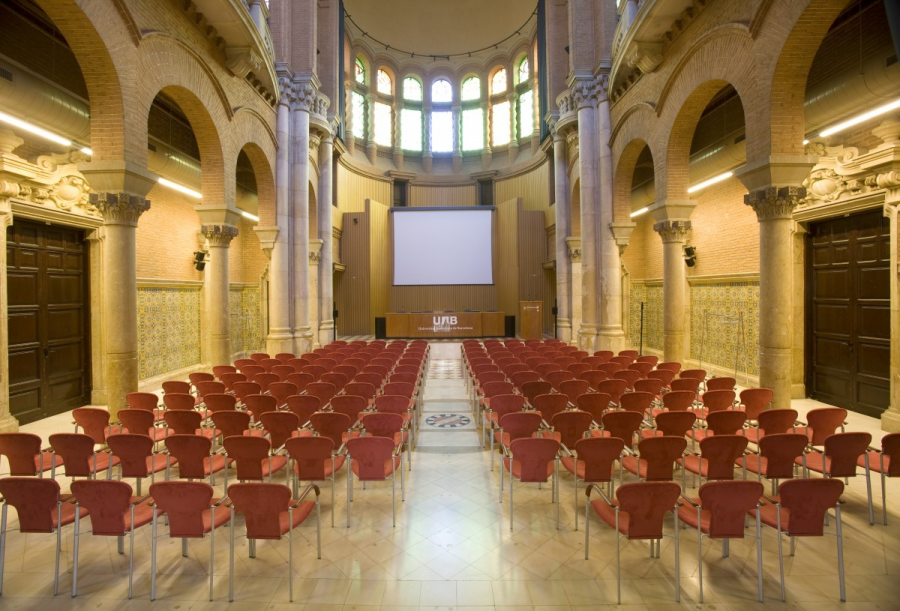

International Advisory Board
- Richard Dronskowski RWTH Aachen University, Germany
- Amparo Fuertes Institute of Materials Science of Barcelona (ICMAB-CSIC), Spain
- Duncan Gregory University of Glasgow, UK
- Masashi Hasegawa Nagoya University, Japan
- Michael Hoffmann Karlsruhe Institute of Technology, Germany
- Hiroshi Kageyama Kyoto University, Japan
- Shinichi Kikkawa Hokkaido University, Japan
- Peter Kroll University of Texas, USA
- Walter Lengauer TU Wien, Austria
- Hua-Tay Lin Guangdong University of Technology, China
- Paul Mc Millan University College London, UK
- Philippe Miele IEM - University of Montpellier 2, France
- Ralf Riedel Technische Universität Darmstadt, Germany
- Tanguy Rouxel University of Rennes 1, France
- Pavol Sajgalik Slovak Academy of Sciences, Slovakia
- Junichi Tatami Yokohama University, Japan
- Franck Tessier University of Rennes 1, France
- Yanchun Zhou Aerospace Research Institute of Materials and Processing Technology of China, China

Local Organising Committee
- Amparo Fuertes (Co-chair) Institute of Materials Science of Barcelona (ICMAB-CSIC), Spain
- Ralf Riedel (Co-chair) Technische Universität Darmstadt, Germany
- Judith Oró Solé Institute of Materials Science of Barcelona (ICMAB-CSIC), Spain
- Montserrat Salas Institute of Materials Science of Barcelona (ICMAB-CSIC), Spain
- Albert Moreno Institute of Materials Science of Barcelona (ICMAB-CSIC), Spain
- José Antonio Gómez (web designer) Institute of Materials Science of Barcelona (ICMAB-CSIC), Spain